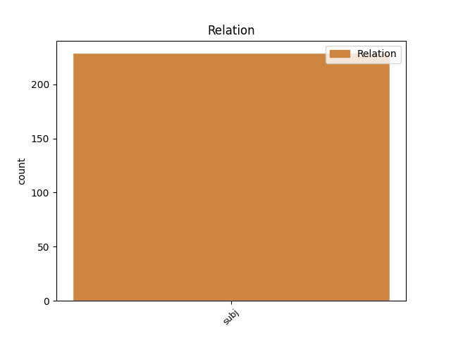
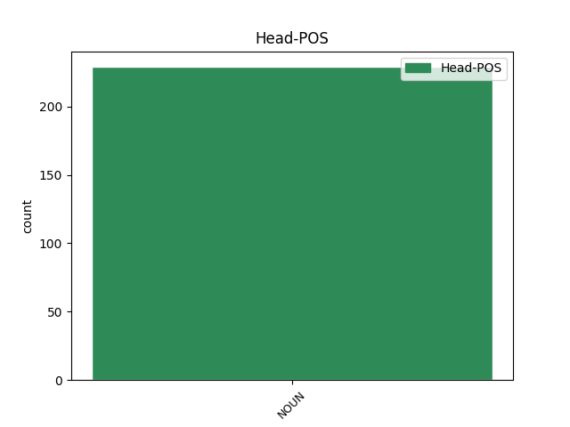
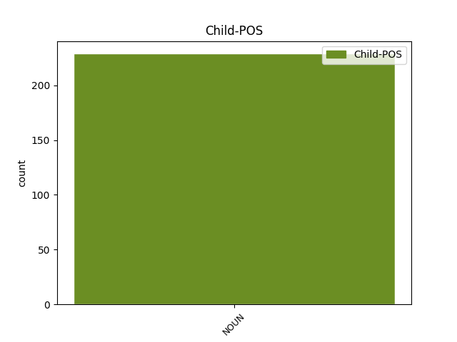

Distribution of features within this leaf



Agreement Rules sorted by frequency.
- When the dependent token is the subject(subj) of the head token, and the head token is NOUN and the dependent token is NOUN.
1 Эксергия эксергия NOUN NN Animacy=Inan|Case=Nom|Gender=Fem|Number=Sing 19 subj _ _
2 ( _ _ _ _ 0 _ _ _
3 эксэргия _ _ _ _ 0 _ _ _
4 ; _ _ _ _ 0 _ _ _
5 от _ _ _ _ 0 _ _ _
6 , _ _ _ _ 0 _ _ _
7 -- _ _ _ _ 0 _ _ _
8 приставка _ _ _ _ 0 _ _ _
9 , _ _ _ _ 0 _ _ _
10 означающая _ _ _ _ 0 _ _ _
11 высокую _ _ _ _ 0 _ _ _
12 степень _ _ _ _ 0 _ _ _
13 , _ _ _ _ 0 _ _ _
14 и _ _ _ _ 0 _ _ _
15 -- _ _ _ _ 0 _ _ _
16 работа _ _ _ _ 0 _ _ _
17 ) _ _ _ _ 0 _ _ _
18 -- _ _ _ _ 0 _ _ _
19 часть часть NOUN NN Animacy=Inan|Case=Nom|Gender=Fem|Number=Sing 0 _ _ _
20 энергии _ _ _ _ 0 _ _ _
21 , _ _ _ _ 0 _ _ _
22 равная _ _ _ _ 0 _ _ _
23 максимальной _ _ _ _ 0 _ _ _
24 полезной _ _ _ _ 0 _ _ _
25 работе _ _ _ _ 0 _ _ _
26 , _ _ _ _ 0 _ _ _
27 которую _ _ _ _ 0 _ _ _
28 может _ _ _ _ 0 _ _ _
29 совершить _ _ _ _ 0 _ _ _
30 термодинамическая _ _ _ _ 0 _ _ _
31 система _ _ _ _ 0 _ _ _
32 при _ _ _ _ 0 _ _ _
33 переходе _ _ _ _ 0 _ _ _
34 из _ _ _ _ 0 _ _ _
35 данного _ _ _ _ 0 _ _ _
36 состояния _ _ _ _ 0 _ _ _
37 в _ _ _ _ 0 _ _ _
38 состояние _ _ _ _ 0 _ _ _
39 равновесия _ _ _ _ 0 _ _ _
40 с _ _ _ _ 0 _ _ _
41 окружающей _ _ _ _ 0 _ _ _
42 средой _ _ _ _ 0 _ _ _
43 . _ _ _ _ 0 _ _ _
Disagree Examples:
1 В _ _ _ _ 0 _ _ _
2 первой _ _ _ _ 0 _ _ _
3 части _ _ _ _ 0 _ _ _
4 герба _ _ _ _ 0 _ _ _
5 -- _ _ _ _ 0 _ _ _
6 ворота _ _ _ _ 0 _ _ _
7 -- _ _ _ _ 0 _ _ _
8 выполнены _ _ _ _ 0 _ _ _
9 из _ _ _ _ 0 _ _ _
10 камня _ _ _ _ 0 _ _ _
11 в _ _ _ _ 0 _ _ _
12 произвольной _ _ _ _ 0 _ _ _
13 форме _ _ _ _ 0 _ _ _
14 ( _ _ _ _ 0 _ _ _
15 в _ _ _ _ 0 _ _ _
16 действительности _ _ _ _ 0 _ _ _
17 данного _ _ _ _ 0 _ _ _
18 архитектурного _ _ _ _ 0 _ _ _
19 сооружения _ _ _ _ 0 _ _ _
20 не _ _ _ _ 0 _ _ _
21 существовало _ _ _ _ 0 _ _ _
22 ; _ _ _ _ 0 _ _ _
23 выражение выражение NOUN NN Animacy=Inan|Case=Nom|Gender=Neut|Number=Sing 29 subj _ _
24 `` _ _ _ _ 0 _ _ _
25 Ворота _ _ _ _ 0 _ _ _
26 Кавказа _ _ _ _ 0 _ _ _
27 '' _ _ _ _ 0 _ _ _
28 -- _ _ _ _ 0 _ _ _
29 аллегория аллегория NOUN NN Animacy=Inan|Case=Nom|Gender=Fem|Number=Sing 0 _ _ _
30 ) _ _ _ _ 0 _ _ _
31 . _ _ _ _ 0 _ _ _
1 Железнодорожный _ _ _ _ 0 _ _ _
2 транспорт транспорт NOUN NN Animacy=Inan|Case=Nom|Gender=Masc|Number=Sing 6 subj _ _
3 Аргентины _ _ _ _ 0 _ _ _
4 -- _ _ _ _ 0 _ _ _
5 железнодорожные _ _ _ _ 0 _ _ _
6 линии линия NOUN NN Animacy=Inan|Case=Nom|Gender=Fem|Number=Plur 0 _ _ _
7 и _ _ _ _ 0 _ _ _
8 компании _ _ _ _ 0 _ _ _
9 на _ _ _ _ 0 _ _ _
10 территории _ _ _ _ 0 _ _ _
11 Аргентины _ _ _ _ 0 _ _ _
12 . _ _ _ _ 0 _ _ _
1 Интеркаля́рная _ _ _ _ 0 _ _ _
2 меристе́ма меристема NOUN NN Animacy=Inan|Case=Nom|Gender=Fem|Number=Sing 7 subj _ _
3 -- _ _ _ _ 0 _ _ _
4 активно _ _ _ _ 0 _ _ _
5 растущие _ _ _ _ 0 _ _ _
6 меристематические _ _ _ _ 0 _ _ _
7 участки участок NOUN NN Animacy=Inan|Case=Nom|Gender=Masc|Number=Plur 0 _ _ _
8 , _ _ _ _ 0 _ _ _
9 расположенные _ _ _ _ 0 _ _ _
10 большей _ _ _ _ 0 _ _ _
11 частью _ _ _ _ 0 _ _ _
12 у _ _ _ _ 0 _ _ _
13 основания _ _ _ _ 0 _ _ _
14 стеблевых _ _ _ _ 0 _ _ _
15 междоузлий _ _ _ _ 0 _ _ _
16 между _ _ _ _ 0 _ _ _
17 зонами _ _ _ _ 0 _ _ _
18 дифференцированных _ _ _ _ 0 _ _ _
19 тканей _ _ _ _ 0 _ _ _
20 . _ _ _ _ 0 _ _ _
1 Кайва кайва NOUN NN Animacy=Inan|Case=Nom|Gender=Fem|Number=Sing 20 subj _ _
2 ( _ _ _ _ 0 _ _ _
3 Caingua _ _ _ _ 0 _ _ _
4 , _ _ _ _ 0 _ _ _
5 Caiua _ _ _ _ 0 _ _ _
6 , _ _ _ _ 0 _ _ _
7 Caiwa _ _ _ _ 0 _ _ _
8 , _ _ _ _ 0 _ _ _
9 Cayua _ _ _ _ 0 _ _ _
10 , _ _ _ _ 0 _ _ _
11 Kaiova _ _ _ _ 0 _ _ _
12 , _ _ _ _ 0 _ _ _
13 Kaiowá _ _ _ _ 0 _ _ _
14 , _ _ _ _ 0 _ _ _
15 Kaiwá _ _ _ _ 0 _ _ _
16 , _ _ _ _ 0 _ _ _
17 Kayova _ _ _ _ 0 _ _ _
18 ) _ _ _ _ 0 _ _ _
19 -- _ _ _ _ 0 _ _ _
20 язык язык NOUN NN Animacy=Inan|Case=Nom|Gender=Masc|Number=Sing 0 _ _ _
21 гуарани _ _ _ _ 0 _ _ _
22 , _ _ _ _ 0 _ _ _
23 на _ _ _ _ 0 _ _ _
24 котором _ _ _ _ 0 _ _ _
25 говорит _ _ _ _ 0 _ _ _
26 народ _ _ _ _ 0 _ _ _
27 кайва _ _ _ _ 0 _ _ _
28 ( _ _ _ _ 0 _ _ _
29 гуарани _ _ _ _ 0 _ _ _
30 - _ _ _ _ 0 _ _ _
31 кайува _ _ _ _ 0 _ _ _
32 ) _ _ _ _ 0 _ _ _
33 в _ _ _ _ 0 _ _ _
34 провинции _ _ _ _ 0 _ _ _
35 Мату _ _ _ _ 0 _ _ _
36 - _ _ _ _ 0 _ _ _
37 Гросу _ _ _ _ 0 _ _ _
38 - _ _ _ _ 0 _ _ _
39 ду _ _ _ _ 0 _ _ _
40 - _ _ _ _ 0 _ _ _
41 Сул _ _ _ _ 0 _ _ _
42 около _ _ _ _ 0 _ _ _
43 рек _ _ _ _ 0 _ _ _
44 Апа _ _ _ _ 0 _ _ _
45 , _ _ _ _ 0 _ _ _
46 Дурадос _ _ _ _ 0 _ _ _
47 , _ _ _ _ 0 _ _ _
48 Ивиньема _ _ _ _ 0 _ _ _
49 на _ _ _ _ 0 _ _ _
50 севере _ _ _ _ 0 _ _ _
51 и _ _ _ _ 0 _ _ _
52 в _ _ _ _ 0 _ _ _
53 горах _ _ _ _ 0 _ _ _
54 Мбаракажу _ _ _ _ 0 _ _ _
55 и _ _ _ _ 0 _ _ _
56 притоках _ _ _ _ 0 _ _ _
57 реки _ _ _ _ 0 _ _ _
58 Жежуй _ _ _ _ 0 _ _ _
59 на _ _ _ _ 0 _ _ _
60 юге _ _ _ _ 0 _ _ _
61 . _ _ _ _ 0 _ _ _
1 Расстояние расстояние NOUN NN Animacy=Inan|Case=Nom|Gender=Neut|Number=Sing 10 subj _ _
2 до _ _ _ _ 0 _ _ _
3 районного _ _ _ _ 0 _ _ _
4 центра _ _ _ _ 0 _ _ _
5 Вологды _ _ _ _ 0 _ _ _
6 по _ _ _ _ 0 _ _ _
7 автодороге _ _ _ _ 0 _ _ _
8 -- _ _ _ _ 0 _ _ _
9 76 _ _ _ _ 0 _ _ _
10 км км NOUN NN Animacy=Inan|Case=Gen|Gender=Masc|Number=Plur 0 _ _ _
11 , _ _ _ _ 0 _ _ _
12 до _ _ _ _ 0 _ _ _
13 центра _ _ _ _ 0 _ _ _
14 муниципального _ _ _ _ 0 _ _ _
15 образования _ _ _ _ 0 _ _ _
16 Новленского _ _ _ _ 0 _ _ _
17 по _ _ _ _ 0 _ _ _
18 прямой _ _ _ _ 0 _ _ _
19 -- _ _ _ _ 0 _ _ _
20 16 _ _ _ _ 0 _ _ _
21 км _ _ _ _ 0 _ _ _
22 . _ _ _ _ 0 _ _ _